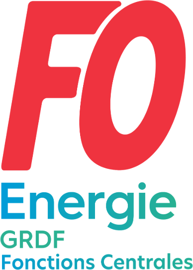
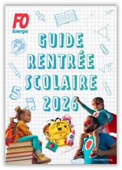

Épisode 1 — Vos 2 heures pour la rentrée
Les 2 heures payées, jusqu'à quel âge, qui y a droit, et les codes GTA avec ce qu'ils valent : RS, 2R, 2N, 2C. Notre mascotte fait sa rentrée en ouverture.

Les 2 heures de rentrée scolaire, les codes à saisir dans la GTA, le congé parent, le CESU, les aides des Activités Sociales : tout ce à quoi vous avez droit dans les IEG, et comment le demander.
Mise à jour : 24 août 2026 · volet santé ajouté · vidéos v3Le droit le plus simple à faire valoir — et le plus souvent oublié.
Un accord de branche du 12 juillet 2024 a enfin inscrit ce droit noir sur blanc pour tous les salariés des IEG. Avant, chaque entreprise faisait comme elle voulait. Aujourd'hui, c'est un droit de branche, à durée indéterminée.
Le code de collecte à saisir dans la GTA. Demande préalable auprès du manager ; justificatif seulement si la date de rentrée diffère de celle fixée par l'Éducation nationale.
Tous les dispositifs de la branche réunis dans une seule brochure, à garder sous la main.

Notre fédération vient de publier son guide de rentrée. Il reprend, dispositif par dispositif, tout ce que cette page détaille pour les Fonctions Centrales — et il fait référence pour l'ensemble des IEG.
À regarder, à partager, à envoyer à un collègue qui ne connaît pas ses droits.
Les 2 heures payées, jusqu'à quel âge, qui y a droit, et les codes GTA avec ce qu'ils valent : RS, 2R, 2N, 2C. Notre mascotte fait sa rentrée en ouverture.
Forfait familial, aide aux frais d'études, congé parent ou CESU, aides des Activités Sociales… et le sport, la danse, la musique financés par votre CMCAS.
L'aide aux activités sportives et culturelles, ce qu'elle couvre, la date limite de dépôt, les 70 disciplines des clubs CMCAS et le Pass'Sport de l'État.
Les trois épisodes sont sous-titrés en dur : ils se comprennent entièrement sans le son.
Versions verticales pour les stories et les réseaux : épisode 1 · épisode 2 · épisode 3
Renseignez l'âge réel de vos enfants : le simulateur applique les seuils exacts (12, 13, 16, 20, 26 ans) et vous dit ce qui est ouvert, ce qui va s'éteindre, et comment le demander.
Aucune donnée n'est enregistrée ni envoyée : tout se calcule dans votre navigateur.
Enfants à votre charge au sens des prestations familiales. Pour un enfant à naître, cochez « naissance ou adoption à venir » ci-dessous.
Le sursalaire familial s'éteint le 31 décembre 2028. Plusieurs congés sont classés « en évolution ». Un droit qui n'est pas utilisé est un droit qu'on finit par vous retirer : demandez-les, et faites-les connaître autour de vous. FO GRDF Fonctions Centrales revendique le maintien et l'amélioration de l'ensemble des droits familiaux du statut et des accords de branche.
Chaque droit a sa date de péremption. Voici, d'un coup d'œil, jusqu'à quel âge de l'enfant chacun reste ouvert.
Chaque année, avant le 31 octobre, vous choisissez entre les deux. Le choix se reconduit tacitement. Voici de quoi trancher.
Le bon code, c'est la différence entre une absence payée et une absence qui vous coûte une journée. Cherchez votre situation.
| Code | Motif | Ce qu'il faut savoir |
|---|
Les libellés et codes ci-dessus sont ceux utilisés dans la GTA à GRDF. Si un code n'apparaît pas dans votre outil ou porte un autre intitulé, ne renoncez pas au droit : signalez-le à votre manager, à votre gestionnaire RH — et à vos délégués FO.
Le récapitulatif complet, filtrable. Cliquez sur une famille pour n'afficher que ce qui vous intéresse.
Le droit le moins connu de tous — et celui qui se perd le plus souvent, faute d'avoir posé la question.
Mais attention — et c'est le point essentiel : ce n'est pas un barème national. Chaque CMCAS fixe ses propres règles, et le dossier se dépose auprès de votre SLVie. D'une CMCAS à l'autre, l'aide va d'une quinzaine d'euros à 120 € par enfant — ici un forfait de 30 à 50 € selon le coefficient social, là une prise en charge de 25 % à 80 % de la facture plafonnée à 120 € — avec des tranches d'âge qui s'arrêtent à 18 ans ici, à 25 ou 26 ans ailleurs, et des dates de dépôt qui ne sont jamais les mêmes.
Le réflexe à avoir : appelez votre SLVie avant d'inscrire votre enfant, et gardez la facture acquittée. Certaines CMCAS majorent aussi l'aide quand plusieurs enfants d'une même famille sont inscrits.
Attention à la date. Beaucoup de CMCAS ferment le dépôt au 31 décembre — après, le dossier est refusé sans examen. Prévoyez le formulaire de votre CMCAS, l'attestation ou la licence du club, la facture acquittée au nom de l'enfant, et vérifiez que votre RIB et votre avis d'imposition sont à jour sur ccas.fr.
Pensez aussi au Pass'Sport de l'État : 70 € pour la saison 2026-2027, pour les 6-17 ans allocataires de l'ARS, jusqu'à 20 ans avec l'AEEH, et les étudiants boursiers jusqu'à 28 ans — à faire valoir au moment de l'inscription, avant le 31 décembre 2026.
Les Activités Sociales sont financées par le 1 % des recettes de la branche — c'est-à-dire par votre travail. Une aide que personne ne demande n'est pas une économie : c'est une aide perdue, et un argument de plus pour ceux qui veulent réduire l'enveloppe. Demandez, systématiquement.
Deux moments font sauter des droits sans prévenir : ses 24 ans, et le jour où il signe un contrat d'apprentissage.
Tant qu'il étudie ou n'a pas d'activité professionnelle, votre enfant reste votre ayant droit jusqu'à son 24e anniversaire : régime obligatoire et complémentaire CAMIEG, sans aucune formalité.
Il doit s'affilier lui-même pour le régime obligatoire. La complémentaire CAMIEG n'est maintenue que si ses ressources restent sous le plafond — 18 234 € sur les revenus 2024, 18 533 € sur les revenus 2025.
Dès l'entrée en apprentissage ou en contrat de professionnalisation, votre enfant cesse d'être votre ayant droit. Il devient un salarié comme un autre, affilié à la CPAM ou à la MSA. Beaucoup s'en aperçoivent au premier remboursement refusé.
Le réflexe : faire le rattachement à la CPAM dès la signature du contrat, sans attendre la rentrée. La complémentaire CAMIEG, elle, reste accessible jusqu'à ses 26 ans, sous conditions de ressources — et si son employeur impose une mutuelle d'entreprise, il peut demander une dispense d'adhésion avec son attestation CAMIEG.
Un — regardez l'âge et les ressources de votre enfant, et créez ou mettez à jour son compte Ameli. Deux — créez son compte CAMIEG s'il en a besoin, et vérifiez qu'un médecin traitant est bien déclaré : sans lui, les remboursements chutent. Trois — s'il part étudier dans l'Union européenne, demandez la Carte Européenne d'Assurance Maladie depuis son compte Ameli, au moins quinze jours avant le départ.
Aucun renouvellement annuel n'est à faire pour la complémentaire : la DGFIP transmet chaque année les revenus à la CAMIEG. Mais attention — une seule année au-dessus du plafond suffit à faire perdre la complémentaire pour l'année concernée, même si votre enfant poursuit ses études. CAMIEG : 08 06 06 93 00.
À partir de son 24e anniversaire, il n'est plus votre ayant droit pour le régime obligatoire : il doit demander son affiliation à titre personnel auprès de la CPAM de son lieu de résidence, depuis son compte Ameli.
Pour la complémentaire CAMIEG, tout dépend de ses ressources : elle est maintenue tant qu'il reste sous 18 234 € par an (droits 2026, calculés sur les revenus 2024) ou 18 533 € (droits 2027, revenus 2025). Il faut alors demander le rattachement comme membre de la famille, en ligne ou par formulaire. Ensuite, plus rien à faire : la DGFIP transmet les revenus chaque année. Au-dessus du plafond, la complémentaire s'arrête pour l'année concernée, et il devra souscrire une mutuelle de son côté.
Il perd le régime obligatoire en tant qu'ayant droit, dès l'entrée en apprentissage ou en contrat de professionnalisation — pas à la rentrée, dès la signature du contrat. Il devient un salarié comme un autre, affilié à la CPAM ou à la MSA de son secteur, avec remboursement des soins, indemnités journalières, et couverture accident du travail dès son premier jour.
En revanche il peut conserver la complémentaire CAMIEG jusqu'à ses 26 ans, sous les mêmes conditions de ressources. Faites le rattachement CPAM tout de suite pour éviter la rupture de droits, puis la demande CAMIEG. Et s'il doit adhérer à la mutuelle collective de son employeur, une dispense est possible sur présentation de son attestation de droits CAMIEG.
Que c'est un droit de branche, issu d'un accord signé le 12 juillet 2024, à durée indéterminée, qui s'applique à toutes les entreprises des IEG. Il n'est pas laissé à l'appréciation de la hiérarchie. Ce qui reste soumis à demande préalable, c'est l'organisation : vous prévenez, on s'organise. Si un refus persiste, prenez contact avec vos délégués FO — c'est exactement le genre de sujet qui se règle vite.
Non. Contrairement à d'autres droits familiaux (indemnité de naissance, prime layette, forfait familial) qui ne sont attribués qu'à un seul des deux parents, l'autorisation d'absence de rentrée scolaire est ouverte à chacun des deux. Vous pouvez accompagner votre enfant tous les deux.
Le droit légal est de 6 demi-journées par an pour un enfant de moins de 16 ans, sur certificat médical. Il passe à 10 demi-journées si l'enfant a moins d'un an, ou si vous avez au moins trois enfants de moins de 16 ans.
Là-dessus, l'accord de branche IEG ajoute quelque chose que le Code du travail ne prévoit pas : 4 de ces demi-journées sont rémunérées par l'employeur, jusqu'au 12e anniversaire du dernier enfant. Concrètement : code 2R tant que vous êtes dans les 4 rémunérées, code 2N ensuite.
Non, c'est l'un ou l'autre. Vous exprimez votre choix une fois par an, au plus tard deux mois avant l'échéance (soit le 31 octobre), et il se reconduit tacitement tant que vous ne dites rien. Le congé parent, ce sont 4 jours rémunérés par an (6 si vous êtes en famille monoparentale), pris par demi-journées, non fractionnables en heures et non reportables d'une année sur l'autre. Le CESU, c'est une dotation de chèques cofinancée à 80 % par l'employeur.
En revanche, le « congé parent-enfant handicapé » de 8 jours s'ajoute aux deux : que vous ayez choisi le congé parent ou le CESU, vous l'avez en plus.
Les deux ne sont pas cumulables. Le forfait familial est de 48,64 € par mois et par enfant jusqu'aux 20 ans de l'enfant (montant au 1er janvier 2026, réévalué chaque année). Le sursalaire familial, lui, est un dispositif en extinction : il ne subsiste que pour les salariés qui en bénéficiaient déjà et s'arrête définitivement fin 2028. Pour les familles nombreuses avec une rémunération élevée, le sursalaire peut encore être plus favorable — faites le calcul avec vos délégués avant de basculer, la bascule est définitive.
À l'aide aux frais d'études : 113,63 € par mois (montant 2026), pendant 5 années maximum, jusqu'à la fin de l'année scolaire de ses 26 ans. Avant 20 ans, il faut des études post-bac ; après 20 ans, toutes les formations inscrites au RNCP comptent, apprentissage compris. Si votre enfant est boursier de l'État sur critères sociaux, s'ajoute une aide forfaitaire de 1 262,57 €, versée une seule fois pendant toute sa scolarité.
En cas de handicap reconnu, la durée passe à 7 années, jusqu'à 28 ans, dans la limite de 84 versements mensuels.
Côté Activités Sociales, pensez aussi à l'aide à l'autonomie des jeunes et à l'aide à la CVEC — elles se cumulent avec l'AFE.
Ce sont les références connues pour 2026. Beaucoup d'aides des Activités Sociales sont attribuées sous conditions de ressources et selon le coefficient social : les fourchettes indiquées sont des plafonds, pas des montants automatiques. Les barèmes sont réévalués chaque année, en général au 1er janvier. Seuls votre employeur, la CAMIEG, la CNIEG et votre CMCAS font foi.
Sur legifrance.gouv.fr pour l'accord de branche du 15 décembre 2017 relatif à l'évolution des droits familiaux, ses avenants et l'accord du 12 juillet 2024 sur les autorisations d'absence de rentrée scolaire ; sur cnieg.fr pour l'aide aux frais d'études ; sur camieg.fr pour la prime layette et l'allocation décès ; sur ccas.fr et le site de votre CMCAS pour les Activités Sociales. Le statut national et les circulaires PERS. sont consultables sur sgeieg.fr.